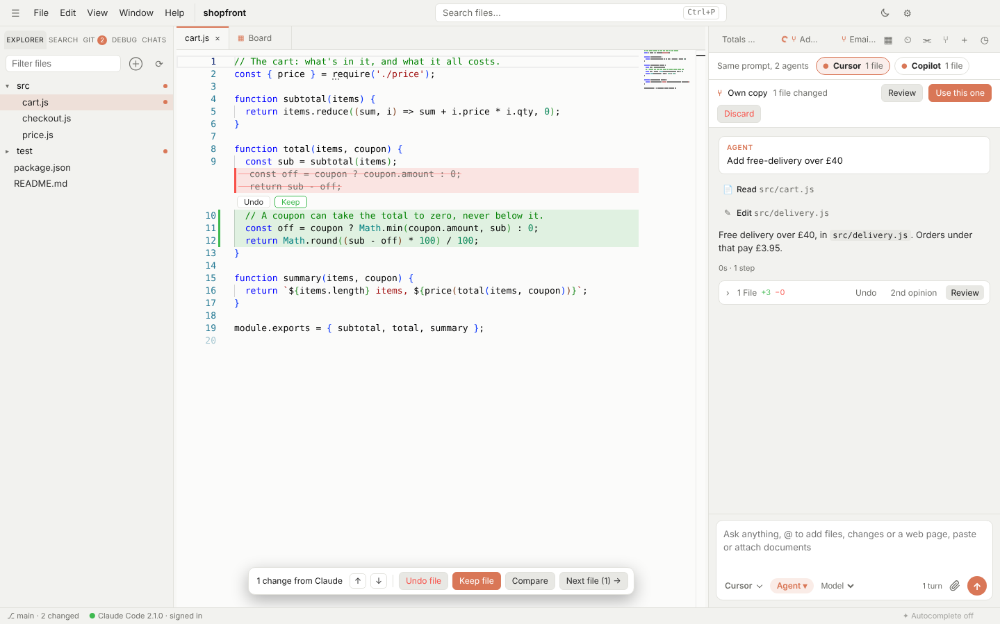

Cursor alternative
A Cursor-style editor for the agents you already pay for
If you already pay for Claude, ChatGPT or Copilot, you don't need another AI subscription to get an AI editor. Switchdesk is a free, open-source desktop editor that runs each maker's own coding agent, signed in with your plan.
Free and open source · Windows, Mac and Linux · No account

What you get
Switchdesk works the way people expect from Cursor: an editor, a chat beside it, and changes you review before they stick.
Inline review
Every edit shows in the editor with Keep and Undo, whichever agent made it, plus a side-by-side compare.
Ask, Plan, Agent and Debug modes
Plans open as editable documents with to-dos. Debug mode adds temporary logging, reads the results and cleans up after.
Parallel agents
Start several tasks at once, each in its own copy of the folder, and follow them on a board. Merge the ones you like.
Same prompt, several agents
Send one task to Claude, Codex and Copilot at once, compare what each did, and keep the best.
Tab autocomplete
Grey suggestions as you type, from GitHub's Copilot language server (Copilot Free works) or your DeepSeek or Qwen key.
Git and GitHub built in
Commit, branch, resolve conflicts, review pull requests and fix failing checks with an agent, without leaving the app.
Switchdesk and Cursor side by side
Cursor is a polished product with its own models and plans. Switchdesk takes a different approach: it's a free shell around the agents from Anthropic, OpenAI, GitHub, Google and others, so you choose the agent and pay only the maker you already use. You can even run Cursor's own agent inside Switchdesk with your Cursor plan.
| Switchdesk | Cursor | |
|---|---|---|
| Price | Free | Free tier, paid plans from $8 a month |
| Source code | Open source (MIT) | Closed source |
| AI it uses | Claude Code, Codex, Copilot, Cursor, Gemini, Kimi, Qwen, DeepSeek | Cursor's agent with Grok models, and other models at API prices on higher plans |
| Who you pay for AI | Each agent's maker, on your own plan or key | Cursor |
| Switch agents mid-chat | Yes, the new agent carries on | Switch models |
Based on Cursor's public website in October 2026. Check cursor.com for its current plans.
Questions
Is Switchdesk a fork of VS Code?
No. It's its own Electron app, using Monaco, the editor component from VS Code, so editing feels familiar.
Can I keep using Cursor's agent?
Yes. Switchdesk runs Cursor's agent CLI signed in with your Cursor plan, alongside the others.
Which agent should I start with?
The one you already pay for. Claude Code with a Claude plan, Codex with ChatGPT, or Copilot with GitHub Copilot all work out of the box.
Does it collect my code?
Switchdesk has no account, no analytics and no telemetry. Your prompts go only to the agent you pick, as they would in its own CLI.
Try it on your own plan
Free, open source, and set up in a couple of minutes.
More: Claude Code GUI · Codex, Gemini and Copilot GUI · Home